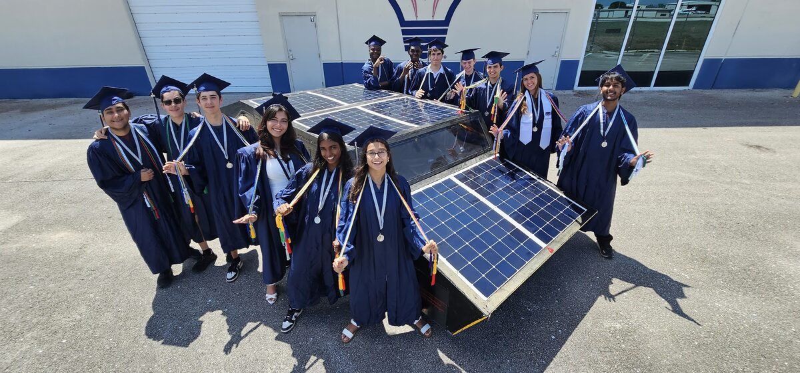

Advanced Experimental Vehicles · FAU High School · 2023 – 2025
Alset Solar Cybersedan.
A four-passenger solar car, and the software that let you watch it race from anywhere in the world.

The Florida Atlantic Solar Owls built a four-passenger solar car and took it to the 31st annual Solar Car Challenge at Texas Motor Speedway — four days of racing on a mile-and-a-half oval, after three days of scrutineering. It finished second in the Cruiser Division, and took the Lockheed Martin Award for engineering excellence and the Renda Carter Award for the team video and scrapbook. It was the first car from a Florida high school or university to compete in that division.
Everything the driver sees in the photograph above is the team's own software: a Tesla-style dashboard running on a touchscreen in the car, showing live speed, battery management data, lap timing, and three camera feeds. The same interface was reachable from anywhere in the world over a VPN, so the pit crew and everyone back home watched the same telemetry the driver did.
What I worked on
I was the Unix and documentation side of the coding subteam. That meant the machine underneath the dashboard: Arch Linux ARM on a Raspberry Pi 5, a Hyprland compositor session for the touchscreen, gpsd and USB serial plumbing for the GPS and the Thunderstruck BMS, and a WireGuard tunnel that made the worldwide remote monitoring possible in the first place. Plus multiple MicroSD backups, because a car on a track in Texas is a bad place to debug a corrupted boot partition.

The stack
- Frontend — Nuxt.js, TailwindCSS and Electron, with ThreeJS for the 3D visualisation
- Backend — JavaScript, ExpressJS, WebSockets and a REST API handling and storing all telemetry
- System — Raspberry Pi 5 (8 GB) on Arch Linux ARM, Hyprland and Aylur's GTK Shell, gpsd, USB serial, WireGuard
- Extras — custom horn soundboard and playlist, WiFi and Bluetooth settings, a debug terminal, and export to Google Sheets
Documentation lives at aev.zachl.tech, and there's a live demo of the dashboard as it ran during the race.
Raced.
2nd
Cruiser Division, 31st Solar Car Challenge
20,000
Team hours designing, building and testing
50+
Students across more than 12 majors
1½ mi
Oval at Texas Motor Speedway, four days of racing
Credits.
Coding subteam — Zachary Lopez (frontend/Unix), Thandi Menelas (backend/Unix), Jossaya Camille (frontend/backend), and me (Unix/documentation). Built within the Advanced Experimental Vehicles programme at FAU High School, alongside a team of more than fifty students.